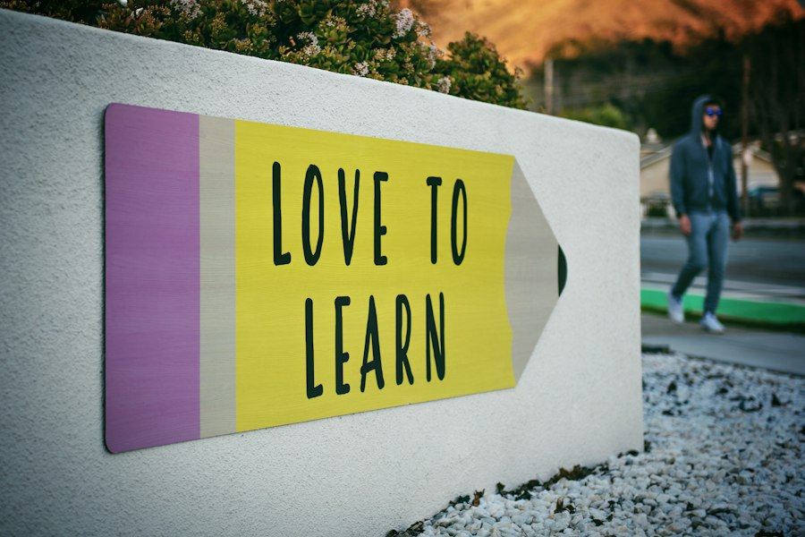

Beranda / Profil Sekolah
Profil Sekolah
Mengenal lebih dekat identitas, arah, dan fasilitas SMK LPPM RI BANDUNG.
Sambutan Kepala Sekolah
Belajar Hari Ini, Berprestasi Esok Hari
Assalamualaikum warahmatullahi wabarakatuh. Selamat datang di SMK LPPM RI BANDUNG. Kami berkomitmen menyiapkan lulusan yang kompeten, berkarakter, dan mampu bersaing di dunia industri maupun melanjutkan pendidikan ke jenjang yang lebih tinggi.
Pembelajaran di sekolah kami dirancang berbasis praktik dan proyek nyata. Dukungan guru profesional, laboratorium lengkap, serta kemitraan dengan industri menjadi bagian penting dari proses belajar siswa.
Kami mengajak seluruh siswa, orang tua, dan mitra untuk bersama-sama membangun lingkungan belajar yang positif dan berprestasi.
Tentang Kami
Sejarah Singkat
SMK Negeri 1 Nusantara berdiri pada tahun 1998 sebagai sekolah menengah kejuruan yang berfokus pada kebutuhan tenaga kerja terampil. Sejak awal, sekolah tumbuh bersama perkembangan teknologi dan kebutuhan industri di sekitar wilayah.
Kini sekolah memiliki empat kompetensi keahlian, fasilitas praktik yang lengkap, serta jaringan mitra industri yang aktif. Berbagai prestasi akademik dan non-akademik terus diukir oleh siswa dan guru.
Fokus Pendidikan
Keunggulan Sekolah
Kurikulum Praktik
Belajar melalui proyek dan praktik langsung.
Laboratorium
Fasilitas praktik sesuai bidang keahlian.
Guru Profesional
Tenaga pendidik berpengalaman di bidangnya.
Mitra Industri
Kemitraan aktif untuk magang dan karier.
Arah Lembaga
Visi & Misi
Visi
Menjadi sekolah kejuruan unggul yang menghasilkan lulusan kompeten, berkarakter, dan berdaya saing global.
Misi
- Menyelenggarakan pembelajaran berbasis kompetensi dan praktik kerja nyata.
- Mengembangkan karakter siswa yang religius, disiplin, dan bertanggung jawab.
- Meningkatkan kualitas guru dan tenaga kependidikan secara berkelanjutan.
- Membangun kerja sama yang aktif dengan dunia usaha dan dunia industri.
- Mendorong lahirnya inovasi, prestasi, dan budaya kerja profesional.
Organisasi
Struktur Sekolah
Kepala Sekolah
Drs. Ahmad Fauzi, M.Pd.
Wakasek Kurikulum
Ibu Ratna Sari, S.Pd., M.Pd.
Wakasek Kesiswaan
Bapak Andi Wijaya, S.Pd.
Wakasek Sarana
Bapak Hendra Gunawan, S.T.
Data Resmi
Tabel Informasi Profil Sekolah
| Nama Sekolah | SMK Negeri 1 Nusantara |
|---|---|
| NPSN | 12345678 |
| Status | Negeri |
| Akreditasi | A (Unggul) |
| Kurikulum | Kurikulum Merdeka |
| Tahun Berdiri | 1998 |
| Kepala Sekolah | Drs. Ahmad Fauzi, M.Pd. |
| Alamat | Jl. Pendidikan Raya No. 45, Kel. Nusantara, Kec. Cendekia, Kota Nusantara 12345 |
| Telepon | (021) 555-0123 |
| info@smkn1nusantara.sch.id | |
| Jumlah Guru | 68 orang |
| Jumlah Siswa | 1.240 siswa |
| Jumlah Rombel | 36 rombongan belajar |
| Kompetensi Keahlian | TKJ, RPL, DKV, Akuntansi dan Keuangan Lembaga |
| Jam Layanan | Senin - Jumat, 07.00 - 16.00 WIB |
Catatan: data di atas adalah contoh. Ganti dengan data resmi sekolah sebelum dipublikasikan.
Sarana Prasarana
Fasilitas Pendukung Belajar
Laboratorium Komputer
Ruang praktik dengan perangkat modern untuk jurusan TKJ dan RPL.

Perpustakaan
Koleksi buku pelajaran, referensi, dan ruang baca yang nyaman.
Studio DKV
Studio desain untuk praktik grafis, ilustrasi, dan multimedia.

Lapangan Olahraga
Area olahraga untuk kegiatan belajar, ekstrakurikuler, dan upacara.